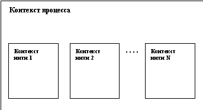

В операционной системе UNIX традиционно поддерживается классическая схема мультипрограммирования. Система поддерживает возможность параллельного (или квази-параллельного в случае наличия только одного аппаратного процессора) выполнения нескольких пользовательских программ. Каждому такому выполнению соответствует процесс операционной системы. Каждый процесс выполняется в собственной виртуальной памяти, и, тем самым, процессы защищены один от другого, т.е. один процесс не в состоянии неконтроллируемым образом прочитать что-либо из памяти другого процесса или записать в нее. Однако контролируемые взаимодействия процессов допускаются системой, в том числе за счет возможности разделения одного сегмента памяти между виртуальной памятью нескольких процессов.
Конечно, не менее важно (а на самом деле, существенно более важно) защищать саму операционную систему от возможности ее повреждения каким бы то ни было пользовательским процессом. В ОС UNIX это достигается за счет того, что ядро системы работает в собственном "ядерном" виртуальном пространстве, к которому не может иметь доступа ни один пользовательский процесс.
Ядро системы предоставляет возможности (набор системных вызовов) для порождения новых процессов, отслеживания окончания порожденных процессов и т.д. С другой стороны, в ОС UNIX ядро системы - это полностью пассивный набор программ и данных. Любая программа ядра может начать работать только по инициативе некоторого пользовательского процесса (при выполнении системного вызова), либо по причине внутреннего или внешнего прерывания (примером внутреннего прерывания может быть прерывание из-за отсутствия в основной памяти требуемой страницы виртуальной памяти пользовательского процесса; примером внешнего прерывания является любое прерывание процессора по инициативе внешнего устройства). В любом случае считается, что выполняется ядерная часть обратившегося или прерванного процесса, т.е. ядро всегда работает в контексте некоторого процесса.
В последние годы в связи с широким распространением так называемых симметричных мультипроцессорных архитектур компьютеров (Symmetric Multiprocessor Architectures - SMP) в ОС UNIX был внедрен механизм легковесных процессов (light-weight processes), или нитей, или потоков управления (threads). Говоря по-простому, нить - это процесс, выполняющийся в виртуальной памяти, используемой совместно с другими нитями того же "тяжеловесного" (т.е. обладающего отдельной виртуальной памятью) процесса. В принципе, легковесные процессы использовались в операционных системах много лет назад. Уже тогда стало ясно, что программирование с неконтролируемым использованием общей памяти приносит больше хлопот и неприятностей, чем пользы, по причине необходимости использования явных примитивов синхронизации.
Однако, до настоящего времени в практику программистов так и не были внедрены более безопасные методы параллельного программирования, а реальные возможности мультипроцессорных архитектур для обеспечения распараллеливания нужно было как-то использовать. Поэтому опять в обиход вошли легковесные процессы, которые теперь получили название threads (нити). Наиболее важно (с нашей точки зрения) то, что для внедрения механизма нитей потребовалась существенная переделка ядра. Разные производители аппаратуры и программного обеспечения стремились как можно быстрее выставить на рынок продукт, пригодный для эффективного использования на SMP-платформах. Поэтому версии ОС UNIX опять несколько разошлись.
Все эти вопросы мы обсудим более подробно в данном разделе.
Каждому процессу соответствует контекст, в котором он выполняется. Этот контекст включает содержимое пользовательского адресного пространства - пользовательский контекст (т.е. содержимое сегментов программного кода, данных, стека, разделяемых сегментов и сегментов файлов, отображаемых в виртуальную память), содержимое аппаратных регистров - регистровый контекст (регистр счетчика команд, регистр состояния процессора, регистр указателя стека и регистры общего назначения), а также структуры данных ядра (контекст системного уровня), связанные с этим процессом. Контекст процесса системного уровня в ОС UNIX состоит из "статической" и "динамических" частей. Для каждого процесса имеется одна статическая часть контекста системного уровня и переменное число динамических частей.
Статическая часть контекста процесса системного уровня включает следующее:
- Описатель процесса, т.е. элемент таблицы описателей существующих в системе процессов. Описатель процесса включает, в частности, следующую информацию:
- состояние процесса;
- физический адрес в основной или внешней памяти u-области процесса;
- идентификаторы пользователя, от имени которого запущен процесс;
- идентификатор процесса;
- прочую информацию, связанную с управлением процессом.
- U-область (u-area) - индивидуальная для каждого процесса область пространства ядра, обладающая тем свойством, что хотя u-область каждого процесса располагается в отдельном месте физической памяти, u-области всех процессов имеют один и тот же виртуальный адрес в адресном пространстве ядра. Именно это означает, что какая бы программа ядра не выполнялась, она всегда выполняется как ядерная часть некоторого пользовательского процесса, и именно того процесса, u-область которого является "видимой" для ядра в данный момент времени. U-область процесса содержит:
- указатель на описатель процесса;
- идентификаторы пользователя;
- счетчик времени, в течение которого процесс реально выполнялся (т.е. занимал процессор) в режиме пользователя и режиме ядра;
- параметры системного вызова;
- результаты системного вызова;
- таблица дескрипторов открытых файлов;
- предельные размеры адресного пространства процесса;
- предельные размеры файла, в который процесс может писать;
и т.д.
Динамическая часть контекста процесса - это один или несколько стеков, которые используются процессом при его выполнении в режиме ядра. Число ядерных стеков процесса соответствует числу уровней прерывания, поддерживаемых конкретной аппаратурой.
Основной проблемой организации многопользовательского (правильнее сказать, мультипрограммного) режима в любой операционной системе является организация планирования "параллельного" выполнения нескольких процессов. Операционная система должна обладать четкими критериями для определения того, какому готовому к выполнению процессу и когда предоставить ресурс процессора.
Исторически ОС UNIX является системой разделения времени, т.е. система должна прежде всего "справедливо" разделять ресурсы процессора(ов) между процессами, относящимися к разным пользователям, причем таким образом, чтобы время реакции каждого действия интерактивного пользователя находилось в допустимых пределах. Однако в последнее время возрастает тенденция к использованию ОС UNIX в приложениях реального времени, что повлияло и на алгоритмы планирования. Ниже мы опишем общую (без технических деталей) схему планирования разделения ресурсов процессора(ов) между процессами в UNIX System V Release 4.
Наиболее распространенным алгоритмом планирования в системах разделения времени является кольцевой режим (round robin). Основной смысл алгоритма состоит в том, что время процессора делится на кванты фиксированного размера, а процессы, готовые к выполнению, выстраиваются в кольцевую очередь. У этой очереди имеются два указателя - начала и конца. Когда процесс, выполняющийся на процессоре, исчерпывает свой квант процессорного времени, он снимается с процессора, ставится в конец очереди, а ресурсы процессора отдаются процессу, находящемуся в начале очереди. Если выполняющийся на процессоре процесс откладывается (например, по причине обмена с некоторым внешнем устройством) до того, как он исчерпает свой квант, то после повторной активизации он становится в конец очереди (не смог доработать - не вина системы). Это прекрасная схема разделения времени в случае, когда все процессы одновременно помещаются в оперативной памяти.
Однако ОС UNIX всегда была рассчитана на то, чтобы обслуживать больше процессов, чем можно одновременно разместить в основной памяти. Другими словами, часть процессов, потенциально готовых выполняться, размещалась во внешней памяти (куда образ памяти процесса попадал в результате своппинга). Поэтому требовалась несколько более гибкая схема планирования разделения ресурсов процессора(ов). В результате было введено понятие приоритета. В ОС UNIX значение приоритета определяет, во-первых, возможность процесса пребывать в основной памяти и на равных конкурировать за процессор. Во-вторых, от значения приоритета процесса, вообще говоря, зависит размер временного кванта, который предоставляется процессу для работы на процессоре при достижении своей очереди. В-третьих, значение приоритета, влияет на место процесса в общей очереди процессов к ресурсу процессора(ов).
Схема разделения времени между процессами с приоритетами в общем случае выглядит следующим образом. Готовые к выполнению процессы выстраиваются в очередь к процессору в порядке уменьшения своих приоритетов. Если некоторый процесс отработал свой квант процессорного времени, но при этом остался готовым к выполнению, то он становится в очередь к процессору впереди любого процесса с более низким приоритетом, но вслед за любым процессом, обладающим тем же приоритетом. Если некоторый процесс активизируется, то он также ставится в очередь вслед за процессом, обладающим тем же приоритетом. Весь вопрос в том, когда принимать решение о своппинге процесса, и когда возвращать в оперативную память процесс, содержимое памяти которого было ранее перемещено во внешнюю память.
Традиционное решение ОС UNIX состоит в использовании динамически изменяющихся приоритетов. Каждый процесс при своем образовании получает некоторый устанавливаемый системой статический приоритет, который в дальнейшем может быть изменен с помощью системного вызова nice (см. п. 3.1.3). Этот статический приоритет является основой начального значения динамического приоритета процесса, являющегося реальным критерием планирования. Все процессы с динамическим приоритетом не ниже порогового участвуют в конкуренции за процессор (по схеме, описанной выше). Однако каждый раз, когда процесс успешно отрабатывает свой квант на процессоре, его динамический приоритет уменьшается (величина уменьшения зависит от статического приоритета процесса). Если значение динамического приоритета процесса достигает некоторого нижнего предела, он становится кандидатом на откачку (своппинг) и больше не конкурирует за процессор.
Процесс, образ памяти которого перемещен во внешнюю память, также обладает динамическим приоритетом. Этот приоритет не дает процессу право конкурировать за процессор (да это и невозможно, поскольку образ памяти процесса не находится в основной памяти), но он изменяется, давая в конце концов процессу возможность вновь вернуться в основную память и принять участие в конкуренции за процессор. Правила изменения динамического приоритета для процесса, перемещенного во внешнюю память, в принципе, очень просты. Чем дольше образ процесса находится во внешней памяти, тем более высок его динамический приоритет (конкретное значение динамического приоритета, конечно, зависит от его статического приоритета). Конечно, раньше или позже значение динамического приоритета такого процесса перешагнет через некоторый порог, и тогда система принимает решение о необходимости возврата образа процесса в основную память. После того, как в результате своппинга будет освобождена достаточная по размерам область основной памяти, процесс с приоритетом, достигшим критического значения, будет перемещен в основную память и будет в соответствии со своим приоритетом конкурировать за процессор.
Как вписываются в эту схему процессы реального времени? Прежде всего, нужно разобраться, что понимается под концепцией "реального времени" в ОС UNIX. Известно, что существуют по крайней мере два понимания термина - " мягкое реальное время (soft realtime)" и " жесткое реальное время (hard realtime)".
Жесткое реальное время означает, что каждое событие (внутреннее или внешнее), происходящее в системе (обращение к ядру системы за некоторой услугой, прерывание от внешнего устройства и т.д.), должно обрабатываться системой за время, не превосходящее верхнего предела времени, отведенного для таких действий. Режим жесткого реального времени требует задания четких временных характеристик процессов, и эти временные характеристики должны определять поведение планировщика распределения ресурсов процессора(ов) и основной памяти.
Режим мягкого реального времени, в отличие от этого, предполагает, что некоторые процессы (процессы реального времени) получают права на получение ресурсов основной памяти и процессора(ов), существенно превосходящие права процессов, не относящихся к категории процессов реального времени. Основная идея состоит в том, чтобы дать возможность процессу реального времени опередить в конкуренции за вычислительные ресурсы любой другой процесс, не относящийся к категории процессов реального времени. Отслеживание проблем конкуренции между различными процессами реального времени относится к функциям администратора системы и выходит за пределы этого курса.
В своих самых последних вариантах ОС UNIX поддерживает концепцию мягкого реального времени. Это делается способом, не выходящим за пределы основополагающего принципа разделения времени. Как мы отмечали выше, имеется некоторый диапазон значений статических приоритетов процессов. Некоторый поддиапазон этого диапазона включает значения статических приоритетов процессов реального времени. Процессы, обладающие динамическими приоритетами, основанными на статических приоритетах процессов реального времени, обладают следующими особенностями:
- Каждому из таких процессов предоставляется неограниченный сверху квант времени на процессоре. Другими словами, занявший процессор процесс реального времени не будет с него снят до тех пор, пока сам не заявит о невозможности продолжения выполнения (например, задав обмен с внешним устройством).
- Процесс реального времени не может быть перемещен из основной памяти во внешнюю, если он готов к выполнению, и в оперативной памяти присутствует хотя бы один процесс, не относящийся к категории процессов реального времени (т.е. процессы реального времени перемещаются во внешнюю память последними, причем в порядке убывания своих динамических приоритетов).
- Любой процесс реального времени, перемещенный во внешнюю память, но готовый к выполнению, переносится обратно в основную память как только в ней образуется свободная область соответствующего размера. (Выбор процесса реального времени для возвращения в основную память производится на основании значений динамических приоритетов.)
Тем самым своеобразным, но логичным образом в современных вариантах ОС UNIX одновременно реализована как возможность разделения времени для интерактивных процессов, так и возможность мягкого реального времени для процессов, связанных с реальным управлением поведением объектов в реальном времени.
Как свойственно операционной системе UNIX вообще, имеются две возможности управления процессами - с использованием командного языка (того или другого варианта Shell) и с использованием языка программирования с непосредственным использованием системных вызовов ядра операционной системы. Возможности командных языков мы будем обсуждать в пятой части этого курса, а пока сосредоточимся на базовых возможностях управления процессами на пользовательском уровне, предоставляемых ядром системы.
Прежде всего обрисуем общую схему возможностей пользователя, связанных с управлением процессами. Каждый процесс может образовать полностью идентичный подчиненный процесс с помощью системного вызова fork() и дожидаться окончания выполнения своих подчиненных процессов с помощью системного вызова wait. Каждый процесс в любой момент времени может полностью изменить содержимое своего образа памяти с помощью одной из разновидностей системного вызова exec (сменить образ памяти в соответствии с содержимым указанного файла, хранящего образ процесса (выполняемого файла)). Каждый процесс может установить свою собственную реакцию на "сигналы", производимые операционной системой в соответствие с внешними или внутренними событиями. Наконец, каждый процесс может повлиять на значение своего статического (а тем самым и динамического) приоритета с помощью системного вызова nice.
Для создания нового процесса используется системный вызов fork. В среде программирования нужно относиться к этому системному вызову как к вызову функции, возвращающей целое значение - идентификатор порожденного процесса, который затем может использоваться для управления (в ограниченном смысле) порожденным процессом. Реально, все процессы системы UNIX, кроме начального, запускаемого при раскрутке системы, образуются при помощи системного вызова fork.
Вот что делает ядро системы при выполнении системного вызова fork:
- Выделяет память под описатель нового процесса в таблице описателей процессов.
- Назначает уникальный идентификатор процесса (PID) для вновь образованного процесса.
- Образует логическую копию процесса, выполняющего системный вызов fork, включая полное копирование содержимого виртуальной памяти процесса-предка во вновь создаваемую виртуальную память, а также копирование составляющих ядерного статического и динамического контекстов процесса-предка.
- Увеличивает счетчики открытия файлов (процесс-потомок автоматически наследует все открытые файлы своего родителя).
- Возвращает вновь образованный идентификатор процесса в точку возврата из системного вызова в процессе-предке и возвращает значение 0 в точке возврата в процессе-потомке.
Понятно, что после создания процесса предок и потомок начинают жить своей собственной жизнью, произвольным образом изменяя свой контекст. В частности, и предок, и потомок могут выполнить какой-либо из вариантов системного вызова exec (см. ниже), приводящего к полному изменению контекста процесса.
Чтобы процесс-предок мог синхронизовать свое выполнение с выполнением своих процессов-потомков, существует системный вызов wait. Выполнение этого системного вызова приводит к приостановке выполнения процесса до тех пор, пока не завершится выполнение какого-либо из процессов, являющихся его потомками. В качестве прямого параметра системного вызова wait указывается адрес памяти (указатель), по которому должна быть возвращена информация, описывающая статус завершения очередного процесса-потомка, а ответным (возвратным) параметром является PID (идентификатор процесса) завершившегося процесса-потомка.
Сигнал - это способ информирования процесса со стороны ядра о происшествии некоторого события. Смысл термина "сигнал" состоит в том, что сколько бы однотипных событий в системе не произошло, по поводу каждой такой группы событий процессу будет подан ровно один сигнал. Т.е. сигнал означает, что определяемое им событие произошло, но не несет информации о том, сколько именно произошло однотипных событий.
Примерами сигналов (не исчерпывающими все возможности) являются следующие:
- окончание процесса-потомка (по причине выполнения системного вызова exit или системного вызова signal с параметром "death of child (смерть потомка)";
- возникновение исключительной ситуации в поведении процесса (выход за допустимые границы виртуальной памяти, попытка записи в область виртуальной памяти, которая доступна только для чтения и т.д.);
- превышение верхнего предела системных ресурсов;
- оповещение об ошибках в системных вызовах (несуществующий системный вызов, ошибки в параметрах системного вызова, несоответствие системного вызова текущему состоянию процесса и т.д.);
- сигналы, посылаемые другим процессом в пользовательском режиме (см. ниже);
- сигналы, поступающие вследствие нажатия пользователем определенных клавишей на клавиатуре терминала, связанного с процессом (например, Ctrl-C или Ctrl-D);
- сигналы, служащие для трассировки процесса.
Для установки реакции на поступление определенного сигнала используется системный вызов
oldfunction = signal(signum, function),
где signum - это номер сигнала, на поступление которого устанавливается реакция (все возможные сигналы пронумерованы, каждому номеру соответствует собственное символическое имя; соответствующая информация содержится в документации к каждой конкретной системе UNIX), а function - адрес указываемой пользователем функции, которая должна быть вызвана системой при поступлении указанного сигнала данному процессу. Возвращаемое значение oldfunction - это адрес функции для реагирования на поступление сигнала signum, установленный в предыдущем вызове signal. Вместо адреса функции во входных параметрах можно задать 1 или 0. Задание единицы приводит к тому, что далее для данного процесса поступление сигнала с номером signum будет игнорироваться (это допускается не для всех сигналов). Если в качестве значения параметра function указан нуль, то после выполнения системного вызова signal первое же поступление данному процессу сигнала с номером signum приведет к завершению процесса (будет проинтерпретировано аналогично выполнению системного вызова exit, см. ниже).
Система предоставляет возможность для пользовательских процессов явно генерировать сигналы, направляемые другим процессам. Для этого используется системный вызов
kill(pid, signum)
(Этот системный вызов называется "kill", потому что наиболее часто применяется для того, чтобы принудительно закончить указанный процесс.) Параметр signum задает номер генерируемого сигнала (в системном вызове kill можно указывать не все номера сигналов). Параметр pid имеет следующие смысл:
- если в качестве значения pid указано целое положительное число, то ядро пошлет указанный сигнал процессу, идентификатор которого равен pid;
- если значение pid равно нулю, то указанный сигнал посылается всем процессам, относящимся к той же группе процессов, что и посылающий процесс (понятие группы процессов аналогично понятию группы пользователей; полный идентификатор процесса состоит из двух частей - идентификатора группы процессов и индивидуального идентификатора процесса; в одну группу автоматически включаются все процессы, имеющие общего предка; идентификатор группы процесса может быть изменен с помощью системного вызова setpgrp);
- если значение pid равно -1, то ядро посылает указанный сигнал всем процессам, действительный идентификатор пользователя которых равен идентификатору текущего выполнения процесса, посылающего сигнал (см. п. 2.5.1).
Для завершения процесса по его собственной инициативе используется системный вызов
exit(status),
где status - это целое число, возвращаемое процессу-предку для его информирования о причинах завершения процесса-потомка (как описывалось выше, для получения информации о статусе завершившегося процесса-потомка в процессе-предке используется системный вызов wait). Системный вызов называется exit (т.е. "выход", поскольку считается, что любой пользовательский процесс запускается ядром системы (собственно, так оно и есть), и завершение пользовательского процесса - это окончательный выход из него в ядро.
Системный вызов exit может задаваться явно в любой точке процесса, но может быть и неявным. В частности, при программировании на языке Си возврат из функции main приводит к выполнению неявно содержащегося в программе системного вызова exit с некоторым предопределенным статусом. Кроме того, как отмечалось выше, можно установить такую реакцию на поступающие в процесс сигналы, когда приход определенного сигнала будет интерпретироваться как неявный вызов exit. В этом случае в качестве значения статуса указывается номер сигнала.
Возможности управления процессами, которые мы обсудили до этого момента, позволяют образовать новый процесс, являющийся полной копией процесса-предка (системный вызов fork); дожидаться завершения любого образованного таким образом процесса (системный вызов wait); порождать сигналы и реагировать на них (системные вызовы kill и signal); завершать процесс по его собственной инициативе (системный вызов exit). Однако пока остается непонятным, каким образом можно выполнить в образованном процессе произвольную программу. Понятно, что в принципе этого можно было бы добиться с помощью системного вызова fork, если образ памяти процесса-предка заранее построен так, что содержит все потенциально требуемые программы. Но, конечно, этот способ не является рациональным (хотя бы потому, что заведомо приводит к перерасходу памяти).
Для выполнения произвольной программы в текущем процессе используются системные вызовы семейства exec. Разные варианты exec слегка различаются способом задания параметров. Здесь мы не будем вдаваться в детали (за ними лучше обращаться к документации по конкретной реализации). Рассмотрим некоторый обобщенный случай системного вызова
exec(filename, argv, argc, envp)
Вот что происходит при выполнении этого системного вызова. Берется файл с именем filename (может быть указано полное или сокращенное имя файла). Этот файл должен быть выполняемым файлом, т.е. представлять собой законченный образ виртуальной памяти. Если это на самом деле так, то ядро ОС UNIX производит реорганизацию виртуальной памяти процесса, обратившегося к системному вызову exec, уничтожая в нем старые сегменты и образуя новые сегменты, в которые загружаются соответствующие разделы файла filename. После этого во вновь образованном пользовательском контексте вызывается функция main, которой, как и полагается, передаются параметры argv и argc, т.е. некоторый набор текстовых строк, заданных в качестве параметра системного вызова exec. Через параметр envp обновленный процесс может обращаться к переменным своего окружения.
Следует заметить, что при выполнении системного вызова exec не образуется новый процесс, а лишь меняется содержимое виртуальной памяти существующего процесса. Другими словами, меняется только пользовательский контекст процесса.
Полезные возможности ОС UNIX для общения родственных или независимо образованных процессов рассматриваются ниже в разделе 3.4.
Понятие "легковесного процесса" (light-weight process), или, как принято называть его в современных вариантах ОС UNIX, "thread" (нить, поток управления) давно известно в области операционных систем. Интуитивно понятно, что концепции виртуальной памяти и потока команд, выполняющегося в этой виртуальной памяти, в принципе, ортогональны. Ни из чего не следует, что одной виртуальной памяти должен соответствовать один и только один поток управления. Поэтому, например, в ОС Multics (раздел 1.1) допускалось (и являлось принятой практикой) иметь произвольное количество процессов, выполняемых в общей (разделяемой) виртуальной памяти.
Понятно, что если несколько процессов совместно пользуются некоторыми ресурсами, то при доступе к этим ресурсам они должны синхронизоваться (например, с использованием семафоров, см. п. 3.4.2). Многолетний опыт программирования с использованием явных примитивов синхронизации показал, что этот стиль "параллельного" программирования порождает серьезные проблемы при написании, отладке и сопровождении программ (наиболее трудно обнаруживаемые ошибки в программах обычно связаны с синхронизацией). Это явилось одной из причин того, что в традиционных вариантах ОС UNIX понятие процесса жестко связывалось с понятием отдельной и недоступной для других процессов виртуальной памяти. Каждый процесс был защищен ядром операционной системы от неконтролируемого вмешательства других процессов. Многие годы авторы ОС UNIX считали это одним из основных достоинств системы (впрочем, это мнение существует и сегодня).
Однако, связывание процесса с виртуальной памятью порождает, по крайней мере, две проблемы. Первая проблема связана с так называемыми системами реального времени. Такие системы, как правило, предназначены для одновременного управления несколькими внешними объектами и наиболее естественно представляются в виде совокупности "параллельно" (или "квази-параллельно") выполняемых потоков команд (т.е. взаимодействующих процессов). Однако, если с каждым процессом связана отдельная виртуальная память, то смена контекста процессора (т.е. его переключение с выполнения одного процесса на выполнение другого процесса) является относительно дорогостоящей операцией. Поэтому традиционный подход ОС UNIX препятствовал использованию системы в приложениях реального времени.
Второй (и может быть более существенной) проблемой явилось появление так называемых симметричных мультипроцессорных компьютерных архитектур (SMP - Symmetric Multiprocessor Architectures). В таких компьютерах физически присутствуют несколько процессоров, которые имеют одинаковые по скорости возможности доступа к совместно используемой основной памяти. Появление подобных машин на мировом рынке, естественно, поставило проблему их эффективного использования. Понятно, что при применении традиционного подхода ОС UNIX к организации процессов от наличия общей памяти не очень много толка (хотя при наличии возможностей разделяемой памяти (см. п. 3.4.1) об этом можно спорить). К моменту появления SMP выяснилось, что технология программирования все еще не может предложить эффективного и безопасного способа реального параллельного программирования. Поэтому пришлось вернуться к явному параллельному программированию с использованием параллельных процессов в общей виртуальной (а тем самым, и основной) памяти с явной синхронизацией.
Что же понимается под "нитью" (thread)? Это независимый поток управления, выполняемый в контексте некоторого процесса. Фактически, понятие контекста процесса, которое мы обсуждали в п. 3.1.1, изменяется следующим образом. Все, что не относится к потоку управления (виртуальная память, дескрипторы открытых файлов и т.д.), остается в общем контексте процесса. Вещи, которые характерны для потока управления (регистровый контекст, стеки разного уровня и т.д.), переходят из контекста процесса в контекст нити. Общая картина показана на рисунке 3.4.

Рис. 3.4. Соотношение контекста процесса и контекстов нитей
Как видно из этого рисунка, все нити процесса выполняются в его контексте, но каждая нить имеет свой собственный контекст. Контекст нити, как и контекст процесса, состоит из пользовательской и ядерной составляющих. Пользовательская составляющая контекста нити включает индивидуальный стек нити. Поскольку нити одного процесса выполняются в общей виртуальной памяти (все нити процесса имеют равные права доступа к любым частям виртуальной памяти процесса), стек (сегмент стека) любой нити процесса в принципе не защищен от произвольного (например, по причине ошибки) доступа со стороны других нитей. Ядерная составляющая контекста нити включает ее регистровый контекст (в частности, содержимое регистра счетчика команд) и динамически создаваемые ядерные стеки.
Приведенное краткое обсуждение понятия нити кажется достаточным для того, чтобы понять, что внедрение в ОС UNIX механизма легковесных процессов требует существенных переделок ядра системы. (Всегда трудно внедрить в программу средства, для поддержки которых она не была изначально приспособлена.)
Хотя концептуально реализации механизма нитей в разных современных вариантах практически эквивалентны (да и что особенное можно придумать по поводу легковесных процессов?), технически и, к сожалению, в отношении интерфейсов эти реализации различаются. Мы не ставим здесь перед собой цели описать в деталях какую-либо реализацию, однако постараемся в общих чертах охарактеризовать разные подходы.
Начнем с того, что разнообразие механизмов нитей в современных вариантах ОС UNIX само по себе представляет проблему. Сейчас достаточно трудно говорить о возможности мобильного параллельного программирования в среде UNIX-ориентированных операционных систем. Если программист хочет добиться предельной эффективности (а он должен этого хотеть, если для целей его проекта приобретен дорогостоящий мультипроцессор), то он вынужден использовать все уникальные возможности используемой им операционной системы.
Для всех очевидно, что сегодняшняя ситуация далека от идеальной. Однако, по-видимому, ее было невозможно избежать, поскольку поставщики мультипроцессорных симметричных архитектур должны были как можно раньше предоставить своим покупателям возможности эффективного программирования, и времени на согласование решений просто не было (любых поставщиков прежде всего интересует объем продаж, а проблемы будущего оставляются на будущее).
Применяемые в настоящее время подходы зависят от того, насколько внимательно разработчики ОС относились к проблемам реального времени. (Возвращаясь к введению этого раздела, еще раз отметим, что здесь мы имеем в виду "мягкое" реальное время, т.е. программно-аппаратные системы, которые обеспечивают быструю реакцию на внешние события, но время реакции не установлено абсолютно строго.) Типичная система реального времени состоит из общего монитора, который отслеживает общее состояние системы и реагирует на внешние и внутренние события, и совокупности обработчиков событий, которые, желательно параллельно, выполняют основные функции системы.
Понятно, что от возможностей реального распараллеливания функций обработчиков зависят общие временные показатели системы. Если, например, при проектировании системы замечено, что типичной картиной является "одновременное" поступление в систему N внешних событий, то желательно гарантировать наличие реальных N устройств обработки, на которых могут базироваться обработчики. На этих наблюдениях основан подход компании Sun Microsystems.
В системе Solaris (правильнее говорить SunOS 4.x, поскольку Solaris в терминологии Sun представляет собой не операционную систему, а расширенную операционную среду) принят следующий подход. При запуске любого процесса можно потребовать резервирования одного или нескольких процессоров мультипроцессорной системы. Это означает, что операционная система не предоставит никакому другому процессу возможности выполнения на зарезервированном(ых) процессоре(ах). Независимо от того, готова ли к выполнению хотя бы одна нить такого процесса, зарезервированные процессоры не будут использоваться ни для чего другого.
Далее, при образовании нити можно закрепить ее за одним или несколькими процессорами из числа зарезервированных. В частности, таким образом в принципе можно привязать нить к некоторому фиксированному процессору. В общем случае некоторая совокупность потоков управления привязывается к некоторой совокупности процессоров так, чтобы среднее время реакции системы реального времени удовлетворяло внешним критериям. Очевидно, что это "ассемблерный" стиль программирования (слишком много перекладывается на пользователя), но зато он открывает широкие возможности перед разработчиками систем реального времени (которые, правда, после этого зависят не только от особенностей конкретной операционной системы, но и от конкретной конфигурации данной компьютерной установки). Подход Solaris преследует цели удовлетворить разработчиков систем "мягкого" (а, возможно, и "жесткого") реального времени, и поэтому фактически дает им в руки средства распределения критических вычислительных ресурсов.
В других подходах в большей степени преследуется цель равномерной балансировки загрузки мультипроцессора. В этом случае программисту не предоставляются средства явной привязки процессоров к процессам или нитям. Система допускает явное распараллеливание в пределах общей виртуальной памяти и "обещает", что по мере возможностей все процессоры вычислительной системы будут загружены равномерно. Этот подход обеспечивает наиболее эффективное использование общих вычислительных ресурсов мультипроцессора, но не гарантирует корректность выполнения систем реального времени (если не считать возможности установления специальных приоритетов реального времени, которые упоминались в п. 3.1.2).
Отметим существование еще одной аппаратно-программной проблемы, связанной с нитями (и не только с ними). Проблема связана с тем, что в существующих симметричных мультипроцессорах обычно каждый процессор обладает собственной сверхбыстродействующей буферной памятью (кэшем). Идея кэша, в общих чертах, состоит в том, чтобы обеспечить процессору очень быстрый (без необходимости выхода на шину доступа к общей оперативной памяти) доступ к наиболее актуальным данным. В частности, если программа выполняет запись в память, то это действие не обязательно сразу отображается в соответствующем элементе основной памяти; до поры до времени измененный элемент данных может содержаться только в локальном кэше того процессора, на котором выполняется программа. Конечно, это противоречит идее совместного использования виртуальной памяти нитями одного процесса (а также идее использования памяти, разделяемой между несколькими процессами, см. п. 3.4.1).
Это очень сложная проблема, относящаяся к области проблем "когерентности кэшей". Теоретически имеется много подходов к ее решению (например, аппаратное распознавание необходимости выталкивания записи из кэша с синхронным объявлением недействительным содержания всех кэшей, включающих тот же элемент данных). Однако на практике такие сложные действия не применяются, и обычным приемом является отмена режима кэширования в том случае, когда на разных процессорах мультипроцессорной системы выполняются нити одного процесса или процессы, использующие разделяемую память.
После введения понятия нити трансформируется само понятие процесса. Теперь лучше (и правильнее) понимать процесс ОС UNIX как некоторый контекст, включающий виртуальную память и другие системные ресурсы (включая открытые файлы), в котором выполняется, по крайней мере, один поток управления (нить), обладающий своим собственным (более простым) контекстом. Теперь ядро знает о существовании этих двух уровней контекстов и способно сравнительно быстро изменять контекст нити (не изменяя общего контекста процесса) и так же, как и ранее, изменять контекст процесса.
Последнее замечание относится к синхронизации выполнения нитей одного процесса (точнее было бы говорить о синхронизации доступа нитей к общим ресурсам процесса - виртуальной памяти, открытым файлам и т.д.). Конечно, можно пользоваться (сравнительно) традиционными средствами синхронизации (например, семафорами, см. п. 3.4.2). Однако оказывается, что система может предоставить для синхронизации нитей одного процесса более дешевые средства (поскольку все нити работают в общем контексте процесса). Обычно эти средства относятся к классу средств взаимного исключения (т.е. к классу семафоро-подобных средств). К сожалению, и в этом отношении к настоящему времени отсутствует какая-либо стандартизация.
Предыдущая глава | Оглавление | Следующая глава
Comments: [email protected]
Copyright © CIT